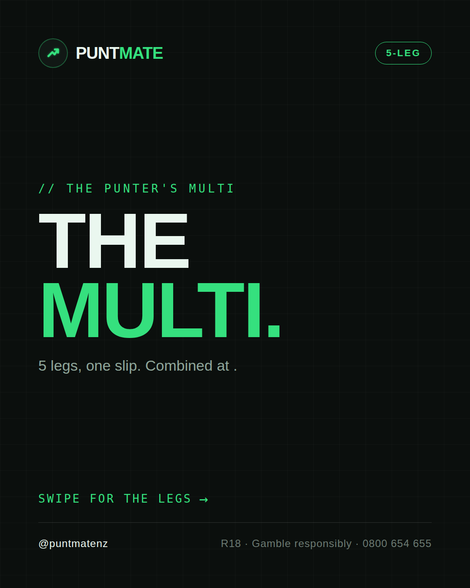
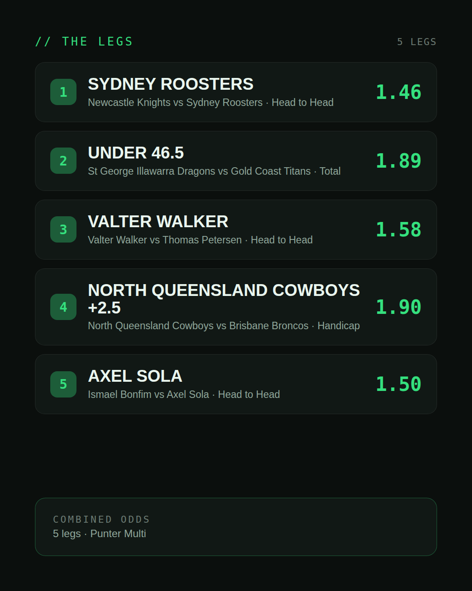
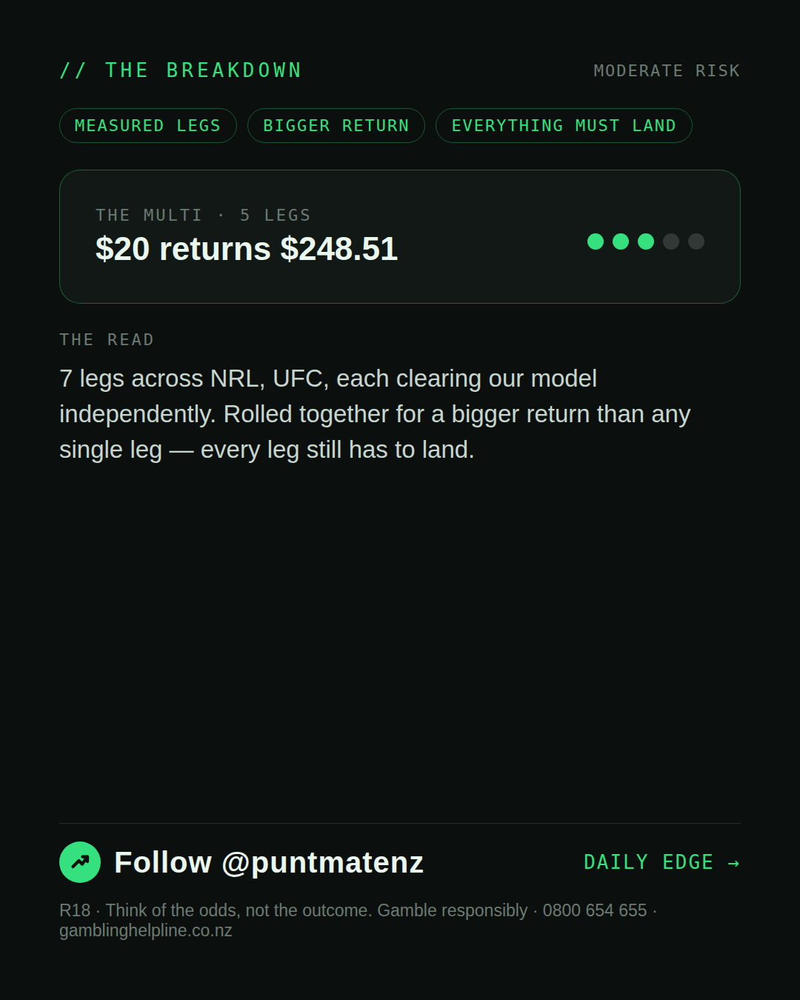

*🎯 PUNTMATE NZ — THE PUNTER'S MULTI* _A measured one: today produced multiple selections that each stand on their own as Investor/Punter-tier picks. Rolled together they pay well beyond any single leg — every leg still has to land, so this is a bigger swing than the day's single pick, not a certainty._ *Leg 1:* Newcastle Knights vs Sydney Roosters — SYDNEY ROOSTERS @ 1.46 (Head to Head) *Leg 2:* St George Illawarra Dragons vs Gold Coast Titans — UNDER 46.5 @ 1.89 (Total) *Leg 3:* Valter Walker vs Thomas Petersen — VALTER WALKER @ 1.58 (Head to Head) *Leg 4:* North Queensland Cowboys vs Brisbane Broncos — NORTH QUEENSLAND COWBOYS +2.5 @ 1.90 (Handicap) *Leg 5:* Ismael Bonfim vs Axel Sola — AXEL SOLA @ 1.50 (Head to Head) *Leg 6:* Canterbury Bulldogs vs New Zealand Warriors — CANTERBURY BULLDOGS +4.5 @ 1.88 (Handicap) *Leg 7:* Canberra Raiders vs Wests Tigers — CANBERRA RAIDERS @ 1.22 (Head to Head) *Combined: 28.50* *BET TYPE: PUNTER* One leg fails, the lot fails. ────────────────── R18 · Gamble responsibly · Problem Gambling Foundation NZ: 0800 664 262
(see per-tier text above — no single Instagram caption for a weekend-multi-only post)
| has_pick | False |
| is_weekend_multi | True |
| pick_id | 2026-07-23_weekend_multi |
| post_date | 2026-07-23 |
| run_id | 30050268093 |
| generated_at | 2026-07-23T22:36:16.955033+00:00 |
| workflow_state | GENERATED |
| has_punter_multi | True |
| punter_multi_carousel_paths | ['data/review/2026-07-23_weekend_multi/punter_multi_cover.png', 'data/review/2026-07-23_weekend_multi/punter_multi_legs.png', 'data/review/2026-07-23_weekend_multi/punter_multi_breakdown.png'] |
| punter_multi_carousel_urls | ['https://raw.githubusercontent.com/kingofthecastle24/puntmate/main/data/cards/2026-07-23_Weekend_Multi_night_punter_multi_1_cover.png', 'https://raw.githubusercontent.com/kingofthecastle24/puntmate/main/data/cards/2026-07-23_Weekend_Multi_night_punter_multi_2_legs.png', 'https://raw.githubusercontent.com/kingofthecastle24/puntmate/main/data/cards/2026-07-23_Weekend_Multi_night_punter_multi_3_breakdown.png'] |
| has_gambler_multi | False |
| has_degenerate_multi | False |
| intended_platforms | ['instagram_feed', 'telegram'] |